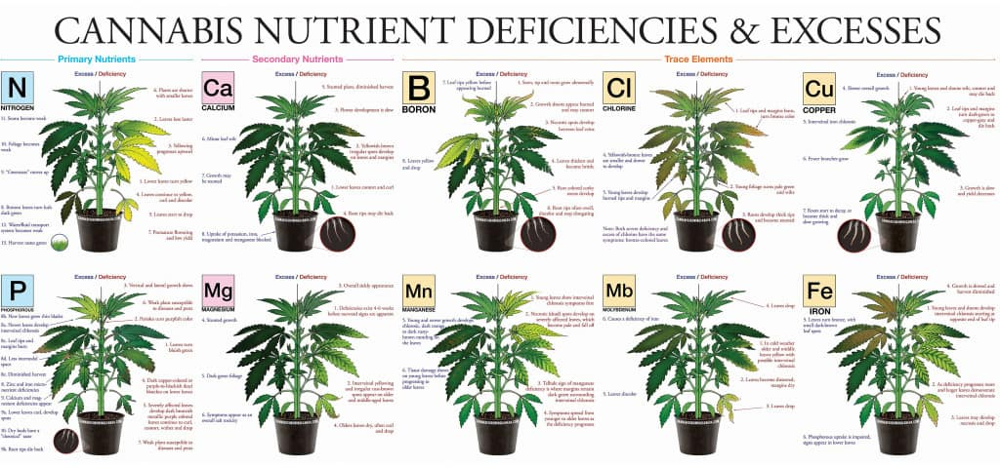

At some point most every grower faces a cannabis nutrient deficiency in their operation. Just like humans, marijuana plants require a certain combination of nutrients to survive and thrive.
Plants are actually very good at communicating their needs by sending signs and signals to their growers. So when your crop isn’t getting a healthy diet, you’ll be able to tell.
Marijuana nutrient deficiencies exhibit themselves in different ways depending on the nutrient that’s lacking. It’s your job as a grower to pay close attention to your crop and keep an eye out for deficiency symptoms, like yellowing leaves, immature buds, or slow root development.
Here we’ll cover everything there is to know about how to keep healthy plants by delivering the right nutrients and fixing any nutrient deficiency problems along the way.
Would you like an ACMPR medical license to grow up to 500 plants at home?
What is an NPK ratio?
An NPK ratio is the ratio or percentage of nitrogen to phosphorus to potassium contained within a fertilizer product.
The letters “NPK” stand for the Big 3 when it comes to marijuana nutrients: Nitrogen (N), Phosphorus (P), and Potassium (K). These are the 3 elements that cannabis plants need in the highest doses (AKA the macronutrients, which we’ll talk more on later).
What do the ratios on fertilizer mean?
The ratios on fertilizer are the percentage of Nitrogen (N), Phosphorus (P), and Potassium (K) in the fertilizer.
Fertilizer ratios and numbers can quickly become confusing, but figuring out NPK values is actually pretty simple.
Here’s a quick example of NPK values of 15-30-15 listed on a fertilizer label: An N-P-K ratio of 15-30-15 means that the ingredients are 15% nitrogen, 30% phosphorus, 15% potassium. The remaining 40% are other ingredients common in fertilizers for plants.
We’re not saying that this is the ideal ratio – there’s actually a lot of debate on that in the Canadian growing community. But it still gives you a good idea of what those numbers mean.
How is the NPK ratio calculated?
The NPK ratio is calculated by taking the weights of your nitrogen, phosphate and potassium components and dividing each by the total weight of all of them. Here’s an excerpt from Penn State to give you an idea:
“If your soil test report recommends applying 1.5 lb of nitrogen, 0.5 lb of phosphate, and 0.5 lb of potash per 1000 sq ft, you should apply a fertilizer with a ratio of 3-1-1 since you need three times as much nitrogen as phosphate and three times as much nitrogen as potash…”
What does nutrient lockout look like?
There are pictures below showing what nutrient lockout can look like. When the nutrient ratios aren’t working for your plants, you run the risk of creating nutrient lockout. This happens when your plants are no longer able to take up nutrients from the soil.
Nutrient lockout has 2 main causes:
- The garden is oversaturated with nutrients and there is salt damage to plants, which is usually caused by fertilizers containing high salt content (this is also called nutrient toxicity in plants).
- There are unsuitable pH levels in the soil, water, or nutrient solution.
Here is a picture of what a lockout of nutrients can look like:

How do I fix nutrient lockout?
Many times it’s easy to fix nutrient lockout with a proper plant flushing. A flush is when you give your plants pure water without any nutrients and fertilizers to try and flush out the salt buildup that’s blocking nutrient uptake.
At the first sign of nutrient lockout, try to stay calm. Whether you think lockout is from salt damage to plants or pH problems, the main thing is that you don’t overreact.
So many growers freak out at the first sign of nutrient deficiency, making drastic changes to their fertilizer quantities or altering pH too quickly for plants to handle.
How do you flush your nutrients?
Here are the simple steps to flush your nutrients. The first step in a proper flush to stop feeding the plants (that means no more nutrients until the problem is solved). The next step is to flood your pots with fresh, pH-balanced water. Ideally a pH of 6.0. It’s actually very easy, so try not to overthink it.
If you’re growing hydroponically and flushing rockwool instead of soil, you’ll run a fresh solution in your hydroponic set up to break down the salt buildup that’s causing the lockout.
Since there are no nutrients involved in a flush, one of the main questions is do buds still grow during flushing? The answer is yes; your marijuana plants don’t stop growing just because the water doesn’t contain nutrients, so you don’t have to worry about stunted growth following a flush.
How to Prevent Plant Nutrient Problems
Before even running into cannabis nutrient deficiencies, you should be doing your best to prevent plant nutrient problems from happening in the first place. The best way to do that is to use a quality fertilizer and don’t overdo it, but it’s also important that you focus on the pH levels of your crop and check them regularly.
Another simple thing you can do to prevent nutrient problems is to flush your cannabis plants a few times throughout the entire growth cycle. Flushing isn’t just something you do when you run into problems – you should do it 2-3 times before you do the final pre-harvest flush.
pH Problems Cause Deficiencies
Most nutrient issues are caused by pH problems and pH fluctuations. Even if you get your nutrient ratio perfect every time, it won’t matter if the crop is dealing with pH issues.
This is because marijuana plants are only able to take up nutrients within a small pH window, which ranges from about 5.5 to 6.5 (hydro) and 6 to 7 soil when growing in soil. If the pH is lower or higher than that, the plant cannot take in nutrients (which leads to nutrient lockout).
To keep things in check, you need to test your pH and PPM (parts per million) for every watering. If it’s out of whack, then flush the crop to bring it back in line.
For example, if the pH level is reading 5.2, which is too low, you want to flush with a 6.0 water solution and test the runoff to see if the problem is corrected.
Symptoms of Overwatering Cannabis
We’ve talked a lot already about how using pure water to flush plants can correct nutrient lockout. But it’s important to realize that there is such a thing as too much water.
The first sign of overwatered plants is drooping, curling leaves that are firm and curled down all the way from the stem to the leaf. This could mean you’re giving them too much water, you’re watering too often, or you don’t have proper plant drainage holes in the bottom of your pots.

Your goal should be to water each plant every 2-3 days. If you notice that after 3 days the plants are still heavy with water, or wet to the touch, give them some time to dry out a bit. Then for your next feeding, give each plant less water (or you may need to move your plants to bigger pots).
What are plant macronutrient deficiencies?
When plants are lacking in one or all of the main macronutrients, you’re dealing with a macronutrient deficiency. The macronutrients (main nutrients required by cannabis plants) are nitrogen, phosphorus, and potassium.
Plant Macronutrients Explained
Every cannabis nutrient plays a unique role in plant development, especially when it comes to the plant macronutrients N, P, and K. When your crop isn’t getting enough of one of these nutrients, things can go south quickly.
Here’s a quick rundown of the role played by each macronutrient:
- Nitrogen: In order for a plant to photosynthesize and produce sugars to feed itself and grow, there must be a good supply of Nitrogen available to each plant.
- Phosphorus: This is essential for a crop’s general health and wellbeing. It plays a role in root development, stem strength, flower formation, and fending off plant diseases.
- Potassium: Similar to phosphorus, potassium is necessary for overall growth and development.
How to Make Sure Your Plant Has All the Macro Nutrients It Needs
Aside from regularly checking the crop’s pH level, it’s all about using the right fertilizer. Not only should you choose one with all the macros needed for healthy harvesting, but also one with the right ratios.
The ideal ratios don’t stay the same throughout the entire grow. For example, plants in veg require high levels of nitrogen, but only need a low N dose during flower.
From our experience growing marijuana plants in Canada, these are the three best nutrient solutions available:
- Remo Nutrients – The Supercharged Kit is a great choice is you’re running a small operation of ~10 plants.
- Gaia Green Fertilizer – This all-purpose fertilizer has even levels of N-P-K and a complete balance of the plant nutrients needed to build healthy soil and grow healthy plants.
- General Hydroponics Floragro – General Hydro offers a different solution for each phase of development, including a 2-1-6, a 5-0-1, and a 0-5-4 ratio.
Symptoms of Nitrogen Deficiency in Cannabis
Since Nitrogen plays a major role in the formation of leaves and stems, in chlorophyll production and in photosynthesis, nitrogen deficiencies usually show up on stems and older leaves.
There are 2 common nitrogen deficiency symptoms to look out for: down-curled and yellow-coloured leaves.
Cannabis Leaves Curling Down at the Tip
You actually have a bigger chance of running into nitrogen excess problems than you do with nitrogen deficiency later on in the grow. Too much nitrogen (which is called nitrogen toxicity) usually shows itself as curling, claw-like leaves.
With too much nitrogen, the leaves are usually a very dark shade of green and the stems are brittle to the touch. Most of the time excessive N has to do with pH imbalances during flowering, so once you get pH levels in check, your plants should be able to correct themselves.
Weed Leaves Turning Yellow
Signs like yellowing older leaves and older leaves dropping off usually indicate that a plant isn’t getting enough nitrogen, which typically happens in veg. If it’s left untreated, you can expect an eventual discolouration of the whole plant.
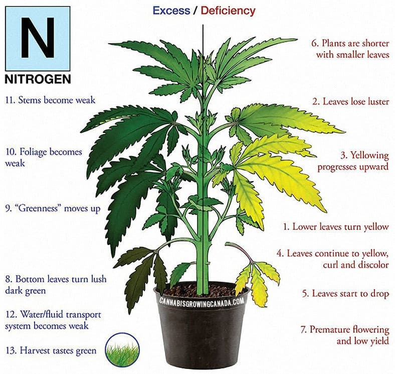

How to Fix Nitrogen Deficiency in Cannabis
The first step to fixing nitrogen nutrient deficiencies is to make sure that your pH and PPM are in check. Since most fertilizers contain a hefty dose of nitrogen, the problem usually has to do with pH.
However, your plants do need a lot of nitrogen, especially in veg, so there’s always a chance that the deficiency can be reversed by adding in a powerful nitrogen solution like NPK Raw Soluble Nitrogen.
Since this product is pure N, be sure to use it gently and remember that less is more!
Symptoms of Phosphorus Deficiency in Cannabis
Deficiencies in phosphorus, the second macro cannabis nutrient, aren’t nearly as common as nitrogen (N) problems, but they’re still possible.
Not enough P can cause some major problems for marijuana plants in flower, and some growers argue that it’s the most important nutrient for flowering plants.
Whether that’s true or not, the obvious signs of phosphorus deficiencies are brown spots on leaves, dry leaves, and stems and that turn a purplish hue.
Stems Turning Purple on Cannabis Plant
If the stems of your cannabis plants start turning purple, you know that you’re dealing with a phosphorus problem. It usually starts with the leaves’ edges losing their vibrant green color, maybe even turning brown or forming brown spots.
The more severe phase is when other plant parts, like the petioles (the part that attaches the leaf to the stem) start to darken and turn a bluish-purple.
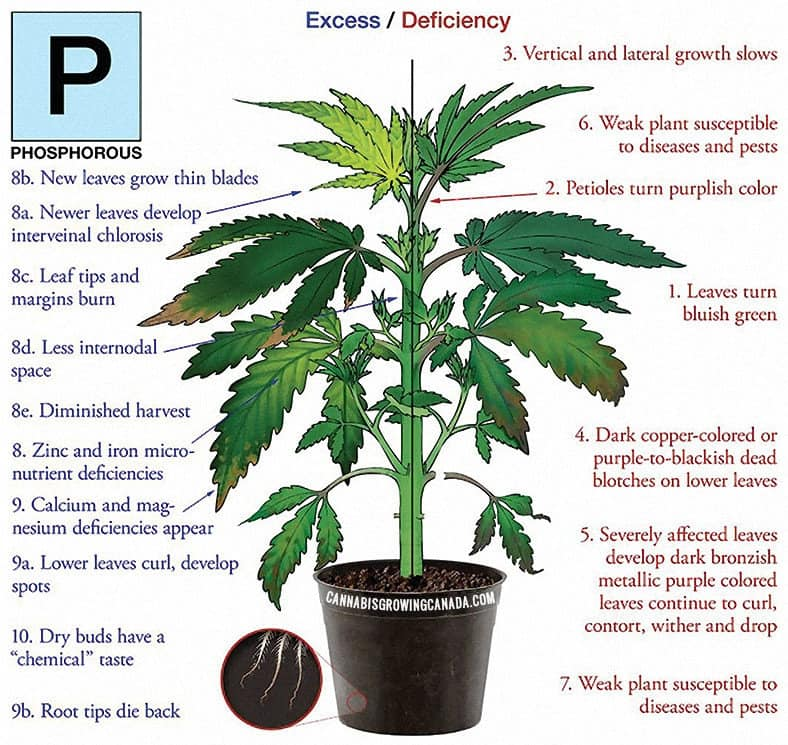

How to Fix Phosphorus Deficiency in Cannabis
Once again, the first thing you should do to fix a lack of phosphorus in marijuana is to make sure that your pH and PPM levels are where they should be. But unlike other nutrient deficiencies, P problems are more likely to show up when temperatures dip too low in the grow room.
Other than checking pH and maintaining ideal temperature, it’s a good idea to add in an Organic Phosphorus solution like powdered Bat Guano. This is a master grower’s best friend that has been used for decades to quickly boost phosphorus deficiencies in a crop that’s lacking.
Symptoms of Potassium Deficiency in Plants
Next up is potassium deficiency in plants. Potassium, the last macronutrient on the list, is represented by the letter “K” on the periodic table of elements. Not enough potassium can negatively affect the root system. K also plays a role in flower development and helps plants protect themselves against fungal diseases.
Leaves Turn Rusty and Brown During Flowering
The most common symptom of a potassium deficiency in weed is rust-coloured leaves, especially during flower. You’ll want to pay close attention to the lower foliage – this is usually the most affected area by a lack of potassium.
Another common symptom in plants that aren’t getting enough potassium is slow-growing leaves that curl up on the ends and might even appear to be burnt along the edges and leaf tips.
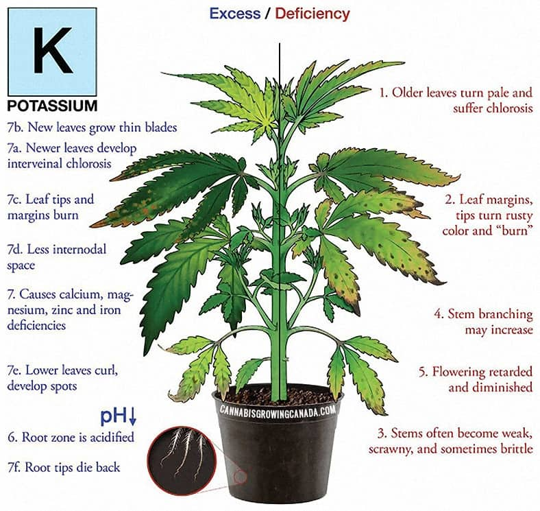

How to Fix Potassium Deficiency in Cannabis
We’ve said it before, and we’ll say it again. The first step to fixing potassium problems is to check the pH of plant runoff to make sure all is well on the pH front.
Potassium nutrient issues usually happen during flower when your plants need higher levels of P and K (and lower levels of N). Once you’ve ruled out pH as being the culprit, you might try giving your plants a shot of straight organic potassium to get them back on the right track.
A good example of this is the Gaia Green Soluble Seaweed Extract, which has a high 17% availability of soluble potash (a fancy phrase for potassium).
What are secondary plant nutrients deficiencies?
Try not to get secondary nutrients for marijuana plants confused with micronutrients. It’s normal for growers to forget entirely about secondary nutes like calcium and magnesium and only focus on the macro and micro.
Secondary nutrients are the three plant nutrients that your marijuana plants require in higher doses than micronutrients, but in much lower doses than the primary macros of nitrogen, phosphorus, and potassium. These 3 elements include:
- Calcium
- Magnesium
- Sulfur
A lack of Ca, Mg, or S can be just as harmful to a grow room, so it’s important that you can identify nutrient deficiency symptoms and make the right changes so that your plants get the secondary nutrients they need.
Plant Secondary Nutrients Explained
Each secondary nutrient plays a unique role in plant health. Calcium helps with regulating plant system functions like respiration and cell division.
Magnesium helps with chlorophyll production and uptake of phosphorus and iron. Sulfur helps plants develop vitamins, aids in seed production, and forms amino acids.
How to Make Sure Your Plant Has All the Secondary Nutrients It Needs
The most common secondary nutrient problems are generally focused around calcium and magnesium. This is why every grower should have a bottle of Cal-Mag solution just in case you run into problems.
These are our 3 favourite Cal-Mag products to keep secondary nutrient levels in check:
- Botanicare Cal-MAG – A 2-0-0 solution that contains beneficial calcium, magnesium, iron, and trace mineral plant nutrient supplements.
- Remo Nutrients – A great choice if you’re looking for quick nutrient uptake from your plants, it usually starts working within a couple of hours.
- NPK Raw Soluble Calcium and Magnesium – A potent dose of 15% calcium and 3% magnesium that’s great for both preventing and treating secondary deficiencies.
Cannabis Calcium Deficiency
Calcium plays a major role in vegetative and reproductive growth in marijuana plants, so it’s vital that you identify and correct a cannabis calcium deficiency ASAP. The main thing you want to look out for is brown spotting, but it can also cause curling leaves, slow flower growth, weak branches, and a slimy root system.
Brown Spots on Weed Leaves
The most common (and easiest to identify) symptom of a Ca problem is when brown spots start forming, especially on new leaves near the top of the plant. It’s also common for the leaf edges to get mottled and start fading to brown.
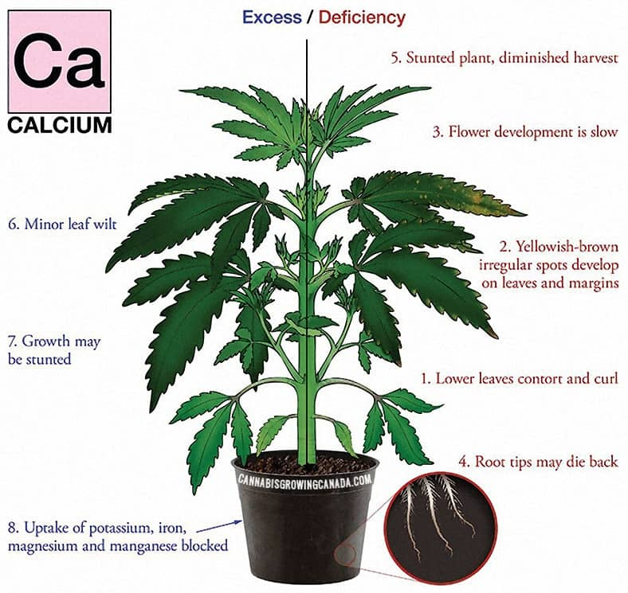

How to Fix Calcium Deficiency in Cannabis
First thing’s first, check that your pH and PPM are in the proper range. Once you’ve identified the problem as calcium-related, use a cal-mag product to boost the Ca levels, but just be careful if you’re doing this during flower since these products usually contain a lot of nitrogen.
Too much calcium can cause problems like blocked absorption of other elements (mainly K, Mg, and Fe) so give small doses to start and pay close attention to how the plants react over the next few days to avoid causing other cannabis nutrient deficiencies.
Sensi Advanced Nutrients is our top pick for fixing calcium deficiencies, and the 4L container should be plenty to get you all the way through to harvesting.
Cannabis Magnesium Deficiency
Cannabis magnesium deficiency can quickly spiral out of control, and a lot of growers blame it on the fact that they didn’t even notice a problem. That’s because most growers are fixated on the tops of their plants where crystally buds are forming, not on the unimportant lower leaves.
Magnesium is a marijuana nutrient that’s mobile, which means it can move the element from older leaves to new leaves. This is why the older growth is usually the first area to be affected by not enough Mg.
Cannabis Leaf Margins Turning Light in Color
The most obvious sign that your crop isn’t getting enough Magnesium is when a light green or yellow color starts to show on the veins and edges of the lower and older leaves, and you might even start to see red stems.
This discolouration usually happens in the leaf margins, but you’ll also notice it affecting the leaf tips. After turning yellow, the leaves will eventually dry out, turn brown, and fall from the plant.
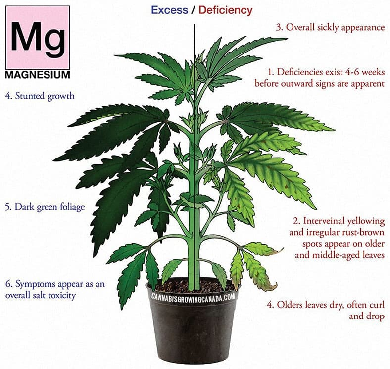

How to Fix Magnesium Deficiency in Cannabis
After using a BlueLab ph meter or another pH tool to test the runoff of your cannabis plants, the next step to fixing an Mg nutrient deficiency is to use a Magnesium supplement to give your plants a boost.
Products like Magnesium Nitrate Hexahydrate are safe to use all the way up to the end of flower, but just be careful not to overdo it. Too much Mg can block the absorption of Calcium, creating even more problems.
Sulfur Deficiency in Cannabis
The last of the secondary nutes is sulfur, S for short. Even though it’s not required in huge quantities, sulfur plays a huge role in the health of your buds. You’ll definitely see lower yields and less potency when your marijuana plants don’t get enough sulfur.
Young Leaves Turning Lime Green and Light in Colour
It’s easy to confuse a sulfur problem with a magnesium deficiency since both result in leaves turning lighter in color. There is a pretty obvious difference, though.
Sulfur is an immobile nutrient, which means that it can’t be transferred from older leaves to newer ones. That’s why in a sulfur deficiency, you’ll see new growth yellowing or turn lime green. In magnesium, the yellowing happens on the lower, older leaves. Another difference is that a more severe sulfur problem can cause the plant petioles to turn purple.
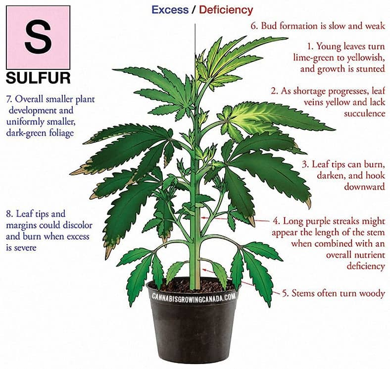

How to Fix Sulfur Deficiency in Cannabis
To be completely honest, you shouldn’t run into sulfur problems as long as you’re using a well-balanced fert, something like General Hydroponics Floragro. But if that’s not doing the trick and you still notice sulfur deficiency symptoms, you can use a silicate supplement, which contains enough sulfur for a good boost.
Another option to address the deficiency is to incorporate Epsom salts into your crop’s diet. Some growers say that around 1 or 2 teaspoons of Epsom salts per gallon of water can act as a sulfur supplement.
Get started on your medical grow license today!
Step 1: Enter your email to book your ACMPR license appointment today
- Compassionate Practitioners Required
- Help with Approvals
- Low Cost Renewals
- No Stress Appointments
What are plant micronutrients deficiencies?
The last class of nutrients for cannabis plants is micro, which are nutrients that are only needed in very small doses. But even though they’re only needed in small quantities, micronutrients are still 100% necessary for a healthy plant diet.
The main micronutrients we’ll be focusing on are:
- Boron
- Copper
- Iron
- Manganese
- Molybdenum
- Zinc
Plant Micronutrients Explained
Since there are quite a few of them, and most you will never see a defincency in, we won’t get into too many specific details on each micronutrient needed for growing hearty, healthy marijuana plants.
The main thing to remember is that a quality fertilizer will have small traces of these nutrients, so don’t skimp on what you’re feeding your crop.
We will list out the main micro issues you may face, but from our experience it is almost always a pH issue that tricks growers into thinking its a micro nutrient issue.
How to Make Sure Your Plant Has All the Micro Nutrients It Needs
It’s all about using the right fertilizer and giving your crop the proper doses. Before buying any fertilizer, check the label to see if it includes all the necessary micros for raising healthy plants.
Usually, you’ll have to buy a separate fertilizer for micro nutrients. Here are a few of our favourites:
- General Hydroponics Flora Micro – This General Hydro product combines the perfect Micro blend for your plants (great for both hydroponic and soil cultivation).
- Remo Nutrients Micro – Remo only uses pharmaceutical grade minerals, marine extracts, and quality chelates to ensure consistency and pH balance (can be used in soil, soilless and hydroponic gardens).
- Gaia Green Glacial Rock Dust – Gaia works to improve your soil structure, its moisture-holding properties, nutrient availability, and bacterial action by adding in natural minerals and trace elements.
Boron Deficiency in Cannabis
It’s not common for growers to run into a boron nutrient deficiency, but it’s easy to tell when you do – your plants will start to look sickly and even deformed.
Boron is responsible for keeping the structural integrity of cell walls within marijuana plants. When there’s not enough of this micronutrient, the internal plasma membranes will start to break down.
The first sign is that the sugar leaves are no longer reaching for light and they start to wilt. Eventually, the whole plant will begin to droop, and if things get bad enough, collapse.
Wilting can mean a lot of different things, so the more obvious sign of marijuana nutrient problems relating to boron is thick twisted new growth. This new growth will eventually die and fall off, which is essentially the plant topping itself to try and deal with the problem.
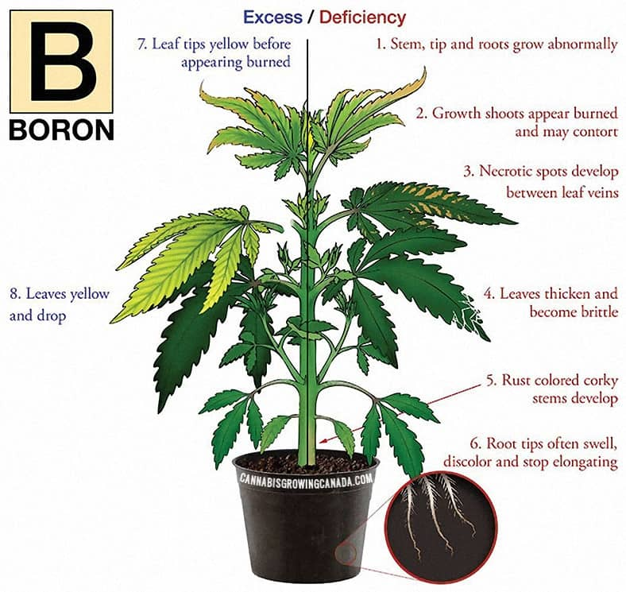

How to Fix Boron Deficiency in Cannabis
Using an all-round micronutrient solution should do the trick to fix boron nutrient deficiencies. We recommend something like Advanced Nutrients Micro, which gives your crop a healthy dose of all the micros, including boron.
Copper Deficiency in Cannabis
Copper is a cannabis nutrient that often flies under the radar, mostly because it’s uncommon to experience copper-related issues. But when it’s not fixed right away, it can stop buds from maturing.
There are actually a lot of signs that point to a deficiency in copper, like:
- Leaf tips and edges turn bright yellow or white
- Yellowing leaves
- Leaves turn dark with blue, purple undertones (during flower)
- Shiny, metallic-looking leaves
- Leaves start rolling under
- Buds are slow to mature or not maturing at all
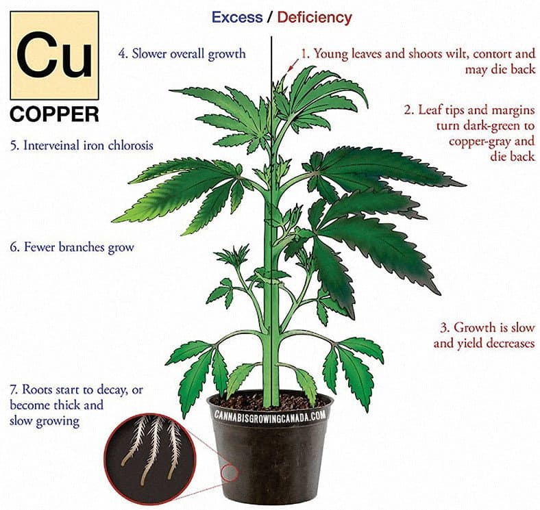

How to Fix Copper Deficiency in Cannabis
More often than not, a copper deficiency has to do with a problem with the pH level at the root zone of your plants. You should be doing this anyway, but start by checking the pH and PPM levels of your plants’ runoff.
If the crop is still showing signs of copper distress, supplement your current nutrient regimen with an all-round micro solution, like BudJuice 100% Advanced Premium Liquid.
Iron Deficiency in Cannabis
It’s easy to miss the signs of lack of iron early on and it’s one of the easiest issues to misdiagnose, but as things progress, you’ll definitely start noticing that something’s not right in the Fe department.
It’s really easy to confuse iron deficiencies with Ca and Mg problems since they all result in yellowing plants. That’s why you can’t just use yellow leaves as an indicator.
You need to closely inspect an unhealthy-looking plant, and if you notice that most of the problems are focused on the newest growth area (rather than the middle or bottom) lack of iron is most likely the culprit.
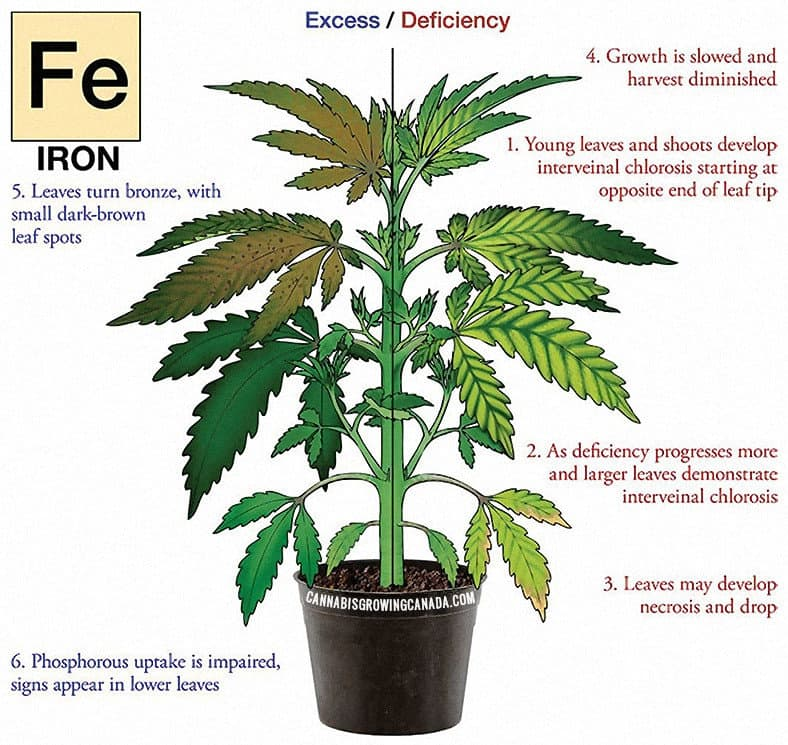

How to Fix Iron Deficiency in Cannabis
As long as you catch it early, an iron problem can usually be fixed quickly by adding in a micronutrient solution like General Hydroponics FloraMicro. Of course, you’ll first want to confirm that your pH and PPM levels are healthy before buying new nutrients.
Manganese Deficiency in Cannabis
Like a lot of micro nutrient deficiencies, manganese problems are relatively uncommon. When it does happen, it’s almost always misdiagnosed as something else, so the issue could be ongoing right up until harvest time, which can lead to some seriously unmatured buds.
The most common signs of an Mn shortage is the signature yellowing of weed leaves, which eventually causes them to turn brown and die. Usually, the upper growth is most affected, and it will resemble a wilting patchwork of light fading greens, yellows, and browns.

How to Fix Manganese Deficiency in Cannabis
One of the best solutions for fixing a manganese problem and fixing it fast is through Remo Nutrients Micro. This micronutrient product can be used for soil, soilless, and hydro gardens, giving your crop a major boost in micronutrients as well as potassium and phosphorus.
Since it doesn’t contain much nitrogen, it’s safe to use this in the late flowering stages.
Molybdenum Deficiency Cannabis
A lot of growers have never even heard of molybdenum, mainly because a cannabis nutrient deficiency in this element is very rare. Plus, it’s really, really difficult to diagnose molybdenum problems.
The chlorosis that hits the middle portion of cannabis plants with insufficient molybdenum is usually mistaken for nitrogen or calcium and magnesium deficiency. But if you look closely, you’ll see that the leaf discoloration has some irregularities, like brown crispy fringes and orange to pink shades in the center.
Once again, a good fix for the problem is to use a micronutrient solution, but just be careful not to go overboard. Too much molybdenum can actually lead to deficiencies with iron and copper. It’s all about finding the right balance.
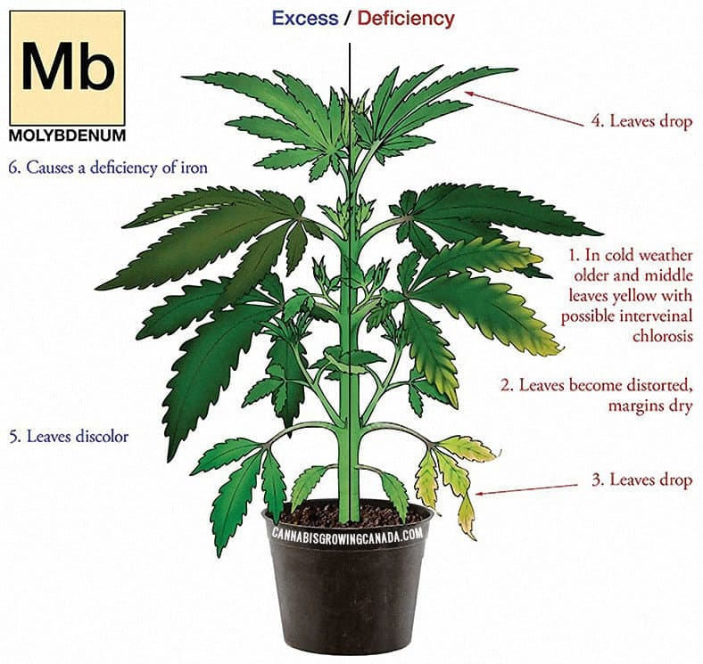

Zinc Deficiency in Cannabis
The last micronutrient for healthy development is zinc. Even though it’s only needed in a small amount, zinc actually plays a lot of crucial roles for your plants, including:
- Building proteins and macromolecular structures like membranes
- Regulating enzyme functions
- Stabilizing both DNA and RNA structures
When zinc levels are out of whack, you’ll start to notice yellowing leaves on new growth, which as you now know can be confused for a lot of different problems. But if you look closely, you’ll notice rust-coloured tips and a smaller distance between nodes.
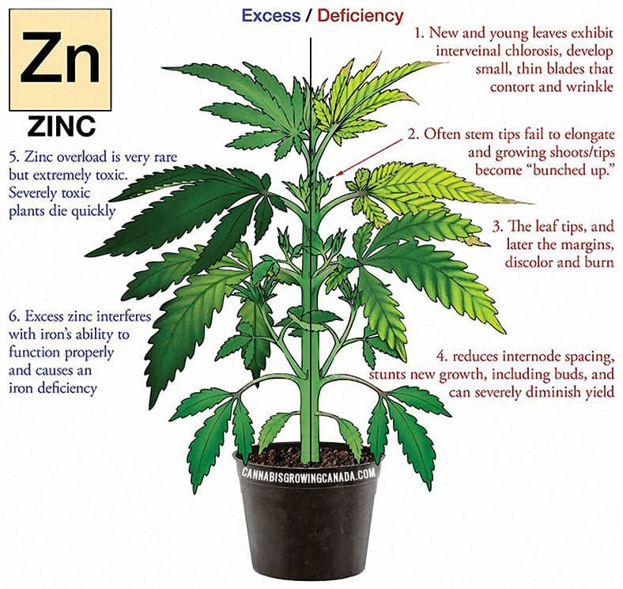

Conclusion
If you feed your toddler junk food or fill your baby’s bottle with Coca Cola, what can you expect? Definitely not a child that will grow up to be strong and healthy. Well, it’s pretty much the same for your marijuana plants.
Feeding them junk nutrients and failing to take notice of deficiency symptoms won’t get you very far with your next crop. The first step is being able to identify a cannabis nutrient deficiency, so keep this guide handy and refer back when you run into problems.
Reader Interactions